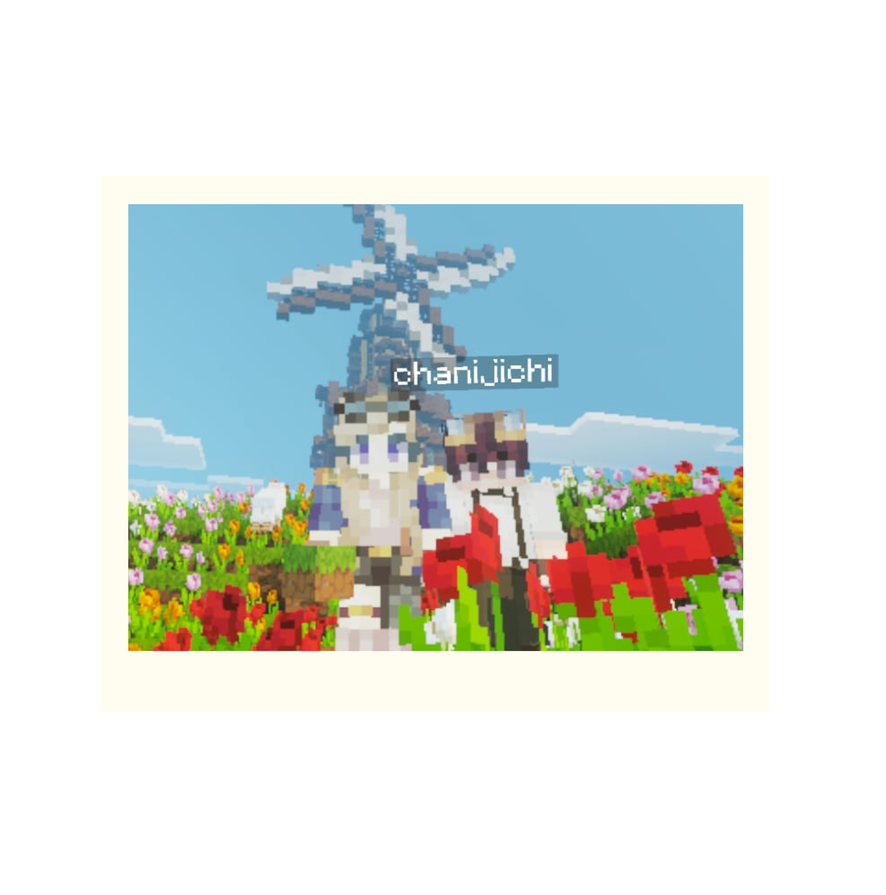
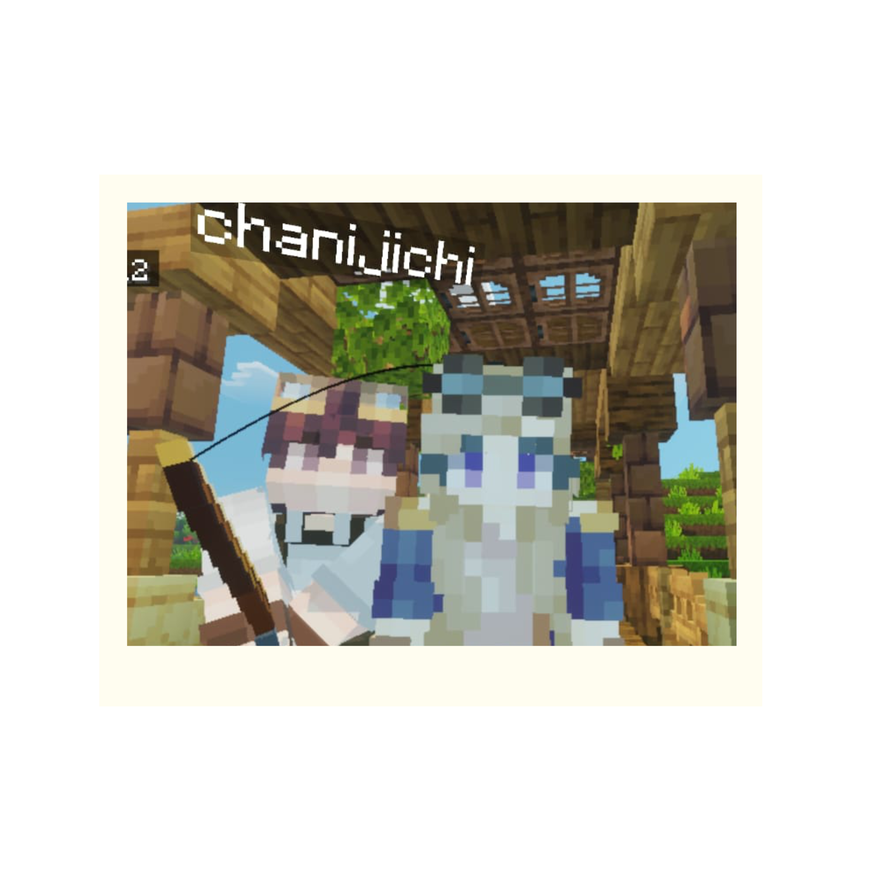

Hai, sayangku,
Kalau ada satu hal yang paling ingin aku bilang hari ini, itu adalah makasih sudah tetap ada, di hari-hari biasa maupun yang berantakan. Kamu bukan sekadar orang yang aku sayang, kamu jadi rumah yang selalu ingin aku pulangi.
Selama dua tahun ini aku liat kamu begitu luar biasa banyak usahamu yang membuat diriku makin sayang kepadamu, kita lalui hari dengan kegiatan yang sama tetapi aku gak akan bosan karena asal dengan dirimu sayangku aku sangat senang bisa bersama mu, dan selalu ingin mabar serta ngobrol terus.
Terima kasih untuk dua tahun ini. Untuk sabarnya, untuk perhatiannya, untuk semua cara kamu bikin aku merasa cukup. Semoga cerita kita masih panjang, dan semoga kita berakhir bersama. I LOVE YOU
selalu, aku
